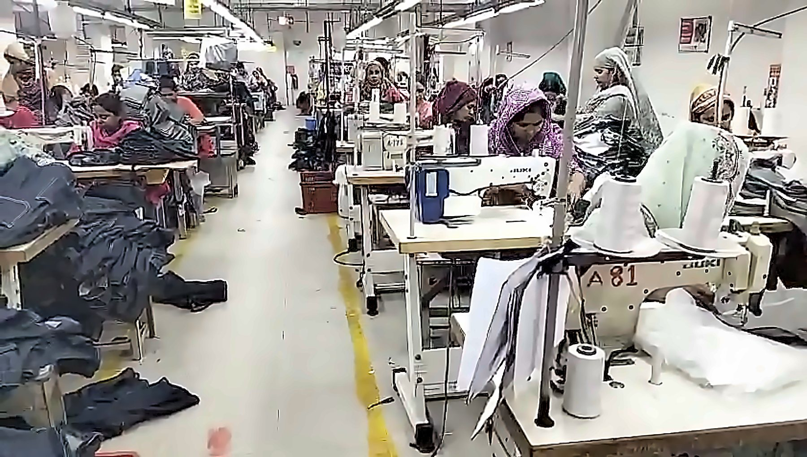

Denim, made with quiet precision.
Premium woven and denim garments, cut, stitched and finished in our own factory, J.M Fashion.
Request a quoteView collection
Premium woven and denim garments, cut, stitched and finished in our own factory, J.M Fashion.
Request a quoteView collectionZevrauk is backed by J.M Fashion, our own garment factory in Dhaka. Cutting, sewing, finishing and packing happen under one roof, so every garment is checked by the people who make it.
About usIndigo, black and light washes in straight, tapered and relaxed fits.
Rolled-hem and distressed styles in classic washes.
Men’s, women’s and children’s trousers and pants.
Our own sewing lines and finishing floor.
Stitching, finish and measurements are reviewed piece by piece.
Folded, tagged and counted to your instructions.